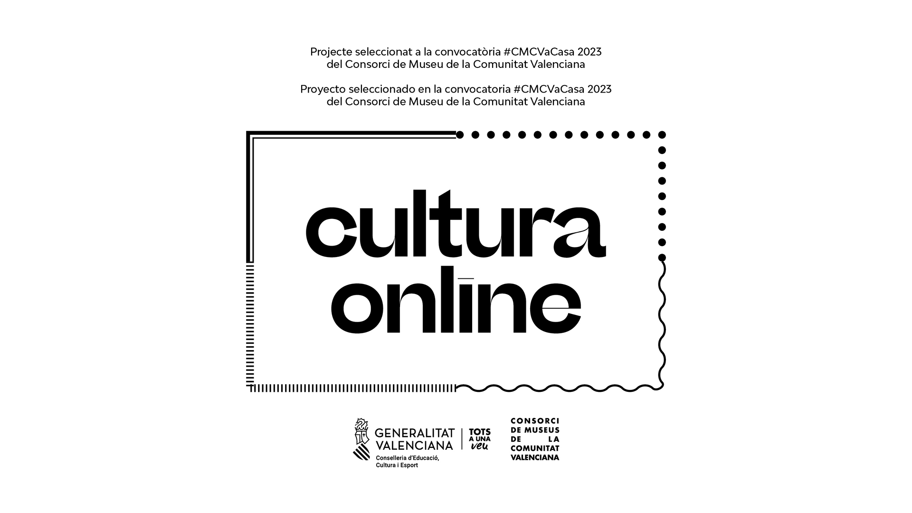

Sobre el proyecto

Todos hemos observado alguna vez el patrón de interferencia que se genera cuando hacemos una fotografía a una pantalla o cuando dos mallas se superponen. Este fenómeno perceptivo, que se conoce como patrón de moiré, se forma cuando dos rejas o cuadrículas se unen con cierta rotación, o siendo desplazadas una respecto de la otra.
Desde el campo de las artes, el moiré suele ser un artefacto que aparece por error y que se tiende a evitar, pero también se ha utilizado como generador de resultados artísticos por artistas de la corriente op-art, como Victor Vassarelly o Bridget Riley.
Recientemente, el físico valenciano Pablo Jarillo-Herrero ha realizado un descubrimiento trabajando con el grafeno (un material compuesto por átomos de carbono en forma de hexágono, en una capa de un solo átomo de espesor). Al colocar dos capas superpuestas y rotadas con el ángulo mágico, se alteran las propiedades físicas del material, convirtiéndolo en superconductor (avance científico que tiene unas implicaciones gigantes en campos como la electrónica). Este denominado ángulo mágico aparece al rotar las capas 1.1 grados, y es el punto de partida de nuestra investigación artística centrada en el análisis de los elementos visuales y sonoros que se pueden derivar de él. El proyecto ha sido posible gracias a la creación de varios sistemas visuales para la generación de arte, que se han basado en la interpretación de cierto conocimiento científico desde nuestro punto de vista como artistas.
Esta obra ha sido desarrollada gracias al programa de Residencias artísticas y culturales para jóvenes 2021 del Servicio de Juventud y a las ayudas a Residencias de creación artística del Servicio de Acción Cultural del Ayuntamiento de València.
Proyecto seleccionado en la convocatoria #CMCVaCasa 2023 del Consorci de Museus de la Comunitat Valenciana
{kind=link}
Roser Domingo & Jorge Dabaliña (2023)